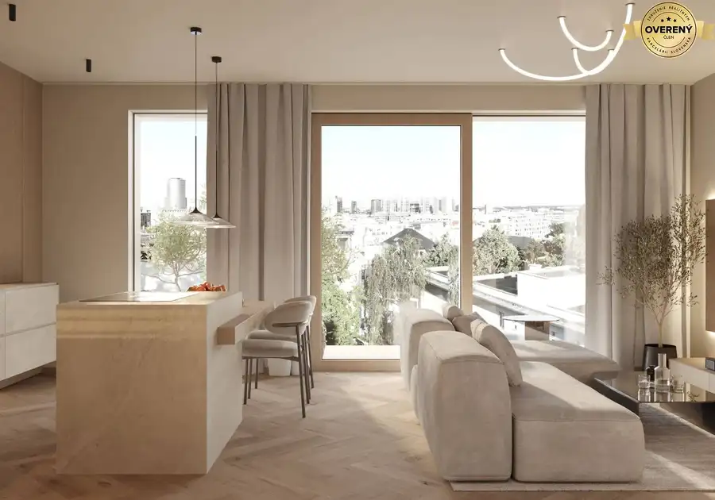
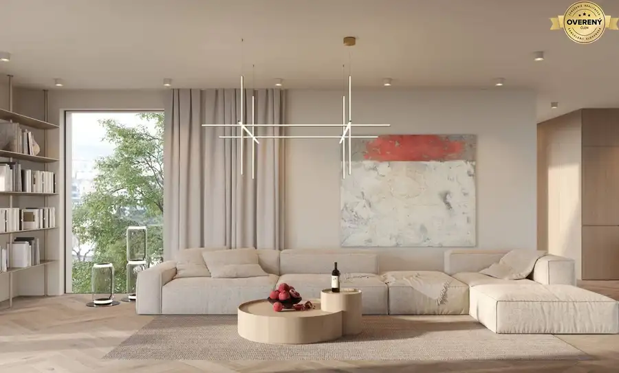
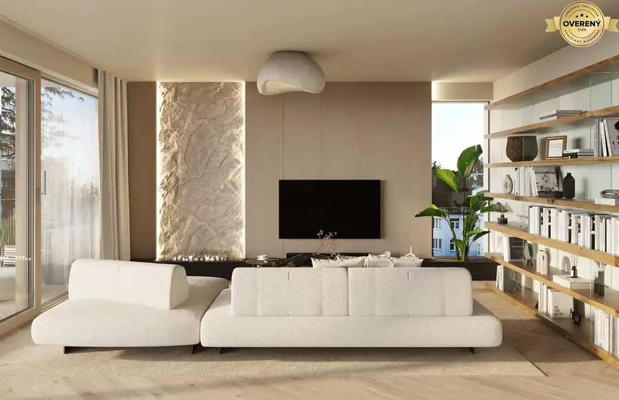

EXKLUZÍVNE: Rodinný dom s hosťovským domom a záhradou
Ružinov, Bratislava
- Plocha133.6 m²
- Stavpôvodný
O nehnuteľnosti
Hľadáte bývanie v
rodinnom dome s príjemnou záhradou,
kde máte absolútny pokoj, no zároveň ste len
20 minút pešo od pulzujúceho centra Bratislavy?
RK38 Vám exkluzívne ponúka nehnuteľnosť, ktorá definuje nový štandard mestského komfortu.
Rodinný dom prešiel
kompletnou a hĺbkovou prestavbou.
Majitelia ho tvorili „pre seba“, čo je cítiť v každom detaile –
od
špičkových technológií až po prémiové prírodné materiály.
Z technického hľadiska ide o
novostavbu pripravenú pre prvého majiteľa.
Rozloha pozemku: 259 m2
Úžitková plocha domu: 133,60 m2
Zastavaná plocha domu: 88,50 m2
Zastavaná plocha hosťovského domu: 21 m2
TOP BENEFITY NEHNUTEĽNOSTI:
-
Modernizovaná infraštruktúra:
Lokalita prešla v posledných mesiacoch kompletnou rekonštrukciou a rozšírením kapacity inžinierskych sietí (vodovod, kanalizácia) a pokládkou optických trás pre najrýchlejší internet.
-
Nová betónová cesta:
Všetky siete sú už bezpečne v zemi a aktuálne sa realizuje úplne nový betónový povrch ulice, čo zabezpečí čistý a komfortný prístup k domu.
-
Bezkonkurenčná poloha:
Pokoj rodinného domu s pešou dostupnosťou do centra a okamžitým napojením na obchvat (D1, R7).
-
Technologický nadštandard:
Energetickú efektivitu zaručuje tepelné čerpadlo (Rehau) v kombinácii s teplovodným podlahovým kúrením, hliníkové okná a dvere, a obvodové murivo Ytong Lambda (450 mm).
-
Prémiové materiály:
Kvalitná vinylová podlaha kladená v nadčasovom vzore rybej kosti,, keramické schodisko a priznané drevené trámy dodávajú interiéru neopakovateľný charakter.
-
Prepojenie so záhradou:
Priamy výstup z obývacej izby na terasu a do upravenej záhrady (152 m²).
-
Unikátny hosťovský dom:
Samostatný objekt (2 poschodia) na pozemku s vlastnou kúpeľňou a spálňou – ideálny ako tichý ateliér, príjemná kancelária alebo súkromné ubytovanie pre hostí.
DISPOZÍCIA
Priestranný 5-izbový dom: 4 samostatné izby + veľkorysá denná zóna.
Dom je navrhnutý mimoriadne prakticky a vďaka veľkorysým preskleniam je plný prirodzeného svetla.
-
Prízemie:
Otvorená denná časť s priznanými trámami a prípravou na krb. Nájdete tu čistý priestor pre kuchyňu podľa Vašich predstáv, samostatnú izbu, technickú miestnosť a kúpeľňu so sprchovým kútom.
-
Podkrovie:
Nočná časť pozostáva z troch samostatných izieb a hlavnej kúpeľne s vaňou. Dispozícia je flexibilná a umožňuje vytvorenie šatníkov či dodatočných úložných priestorov.
-
Bezproblémové parkovanie
LOKALITA – NOVÝ RUŽINOV
Dynamicky sa rozvíjajúca štvrť,
ktorá spája výbornú infraštruktúru
s blízkosťou Dunaja a lužných lesov.
Lokalita je ideálna pre tých, ktorí hľadajú rýchle
spojenie s biznis centrami mesta
, no po práci túžia po
tichu vlastnej záhrady.
Ak hľadáte nehnuteľnosť, ktorá spája kvalitu, priestor a výnimočnú dostupnosť, tento dom v Novom Ružinove predstavuje unikátnu príležitosť.
Cena: dohodou
Viac informácií na tel.č. alebo - Matúš Bendík.
Parametre
| Rozloha pozemku | 259 m² |
|---|---|
| Zastavaná plocha | 109.5 m² |
| Úžitková plocha | 133.6 m² |
| Poschodie | neuvedené |
| Počet poschodí | 2 |
| Stav | pôvodný |
| Voda | verejný vodovod |
| El. napätie | 230V |
| Plyn | nie |
| Kanalizácia | áno |
| Internet | optika |
| Kúpeľňa | áno |
| Vykurovanie | áno |
| Terasa | áno |
| Inžinierske siete | áno |
| Postavené z | Ytong |
| Energetický certifikát | áno |
| Okná | hliníkové |
| Terén | rovina |
| Prístupová cesta | betónová cesta |
| Novostavba | áno |
| Dátum zverejnenia | 28. 3. 2026 |
Kde to je
Mohlo by Vás zaujímať

Byt10 Cena dohodouModerný 2-izbový mestský byt s priestrannou terasou Staré Mesto, Bratislava 2-izbový60.2 m²1. podlažie Lukratívny 2-izbový byt v komornom projekte Gledíčia ponúka dokonalé útočisko pre náročného jednotlivca alebo pár, ktorí oceňujú ticho Horského parku…
Byt10 Cena dohodouVrcholné bývanie v priestrannom 4-izb. mezonete na exluzívnej adrese Staré Mesto, Bratislava 4-izbový167 m²4. podlažie Priestranný 4-izbový mezonet v komornom projekte Gledíčia je odpoveďou pre tých, ktorí nepoznajú kompromisy. Spája v sebe vzdušnosť moderného loftu s…
Byt10 Cena dohodouRodinná rezidencia s veľkorysou privátnou záhradou Staré Mesto, Bratislava 4-izbový130.48 m²2. podlažie Hľadáte pre svoju rodinu domov, ktorý ponúka priestor vily a bezpečie luxusného bytového domu? Ponúkaný 4-izbový byt v komornom projekte Gledíčia je…